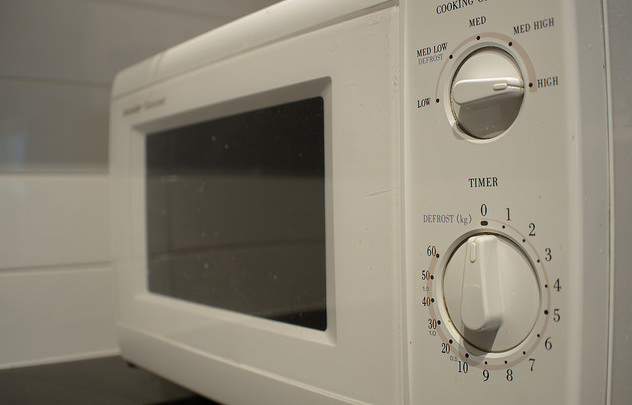
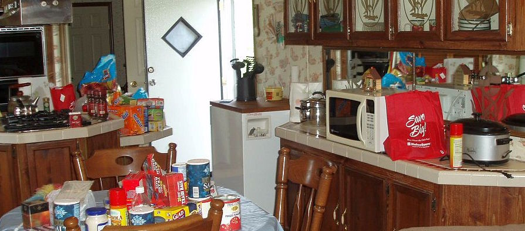
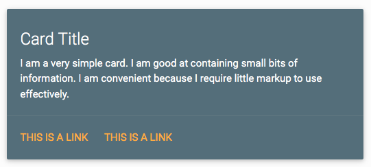
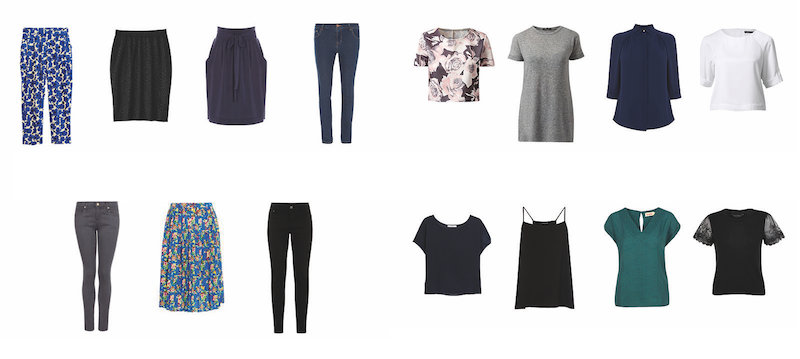

Less Code
Simplifying front-end
Let me tell you a story…
On dogmatism
Learn to identify dogmas
- "A dogma is a principle laid down by an authority as true"
- Some dogmas might be useful (i.e. "5 a day")
- Dogmas usually contain some truth…
- …but that doesn't make them right 100% of the time
Develop your own criteria
- You might not need X for your project
- There are no silver bullets. Don't get married to a technology or a tool
- Challenge yourself!
Image credit: danc86 @ flickr
On keeping up
Front-end is ever-changing
- Yet another MCV framework
- Yet another CSS transpiler
- Yet another building tool
- Yet another template system
- ES6 is not yet fully supported and we're already coding with ES7!
Change is good
But…
Are you overwhelmed?
I am
You don't have to keep up
- You don't need to be an expert in all frameworks
- You don't need to use every CSS transpiler out there
- After all, they all do the same thing
- And by the way, callbacks still work
You have to find balance
- Learning new things is a must
- But it's impossible to know everything from day zero
- Learn as you go
- Be curious
On dealing with clutter
Features == possessions
- You probably don't need as many as you believe
- They require permanent upkeep
- They drag you down
Image credit: mlspooky @ flickr
Only keep what's useful or make users happy
- Is this thing essential?
- Do users truly love this?
- Learn to say "no"
The hidden cost of things
- We think that the cost of a feature is just the time to implement it
- What about debugging? Docs? Testing? Localisation? Customer support?
- What about upkeep? Tech debt? Growing code-base?
- What about this breaking existing stuff?
Less features makes you agile
- You are less emotionally attached
- You can afford to throw it out if it doesn't work
- You can onboard team mates more easily
- You have resources to focus on what really matters
On simplicity
Have decent HTML and CSS
- HTML and CSS is code and you need to care about it.
- Don't settle for sub-standard markup or sloppy CSS
- Bad HTML and CSS will slow you down and make it harder to apply re-designs
Be aware of UX frameworks
- Great for prototyping
- The Incarnation of Evil if you need a different design
- Heavy luggage: styles you don't need AND hard to override
Avoid insane HTML
How can this… ?
…become this?
<div class="row">
<div class="col s12 m6">
<div class="card blue-grey darken-1">
<div class="card-content white-text">
<span class="card-title">Card Title</span>
<p>I am a very simple card. I am good at containing small bits of information.
I am convenient because I require little markup to use effectively.</p>
</div>
<div class="card-action">
<a href="#">This is a link</a>
</div>
</div>
</div>
</div>
…and not this?
<article class="card light">
<h1 class="card-title">Card Title</h1>
<p>I am a very simple card. I am good at containing small bits of information.
I am convenient because I require little markup to use effectively.</p>
<nav class="card-action">
<a href="#">This is a link</a>
</nav>
</article>
Make your CSS flexible to design changes
- Understand your cascade and don't just overwrite
- Use the less specific selector that works
- Do cascade and avoid repeating rules
- Be aware of unnecessary browser prefixes (
border-radiusI am looking at you)
When using a CSS transpiler
- Think about the actual CSS output (ex:
extendvs. mixins in Less) - If you wouldn't type that rule by hand, don't let your transpiler do it for you
- Do you need a transpiler for this particular project?
Don't abuse nesting
.post {
& > header {
.meta {
a {
color: red;
}
}
}
}- Large CSS file
- Very specific rules which are hard to override
- Leads to no code re-use
Read more about abusing nesting
JavaScript
- Care as much about it as back-end code! (tests, style guidelines, DRY, etc.)
- "JavaScript is ugly" is not an excuse
- If you use a framework / library, try to understand how it works
Favor modularity
- Not only in your own code, but in the tools you use
- 3rd-party libs/frameworks that are modular, are way easier to understand…
- …and to re-use their parts in other projects
- JS modules FTW
Image credit: queenieandthedew @ flickr
Know when & how to concede
- Sometimes it's not possible to keep everybody in the same page
- Some scenarios call for a "dirty" solution
- Keep a corner of calm